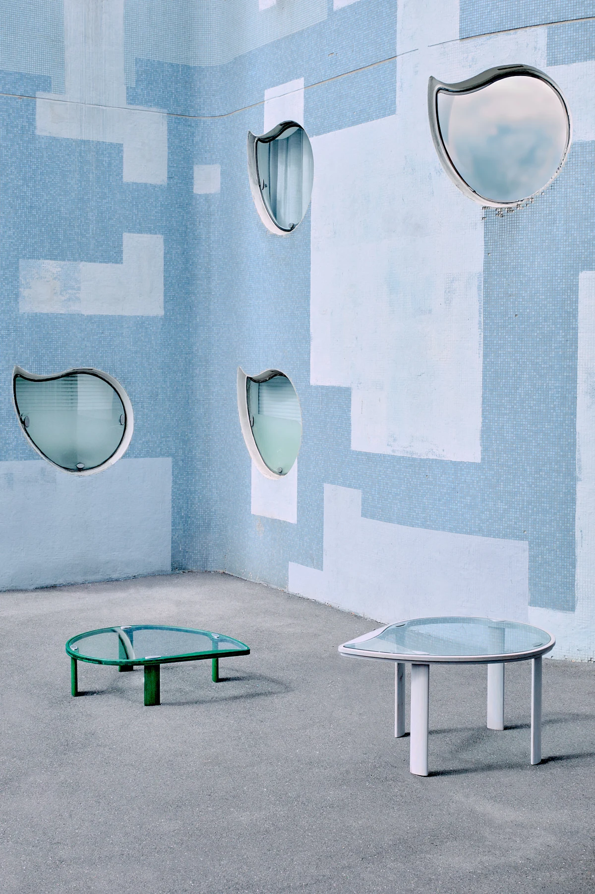

Une forme dessinée par l’architectureLe projet · Nanterre
Un fragment
des Tours Nuages,
à portée de main.
Dans le quartier Pablo Picasso, les Tours Nuages d’Émile Aillaud entament une nouvelle étape de leur histoire. À l’occasion de leur réhabilitation, les verres trempés des fenêtres « feuille de sauge » sont déposés.
Voués à être écartés du chantier, ces éléments deviennent le point de départ d’un mobilier qui conserve leur forme et révèle leurs nuances. Le verre est accueilli à fleur de bois, dans une structure pensée pour le soutenir et le transmettre.
Dessinées par Émile Aillaud, les 18 tours ont été construites entre 1973 et 1981 pour accueillir 1 607 logements. Leurs fenêtres aux formes singulières composent avec les fresques de Fabio Rieti une façade changeante, devenue un repère du quartier Pablo Picasso.
Le projet de mobilier prolonge cette histoire à l’échelle de l’objet. La famille Aillaud a donné son accord à la revalorisation des verres ; une première table a été autoproduite et présentée à Paris Design Week Factory en 2025.
Rencontrer les créatrices